Complex CSI
10 historical CSI slots and 12 targets at 1, 5, 10, 20, …, 100 ms.
The CSI-EnvFormer dataset pairs ray-traced channel state information (CSI) with base-station RGB and LiDAR observations and UE position and motion records. It covers line-of-sight (LoS) mobility at 2, 5, 10, and 20 m/s in simulated urban layouts.
All layouts use the same scale and viewing angle. The rust-colored triangle marks the base-station array center.
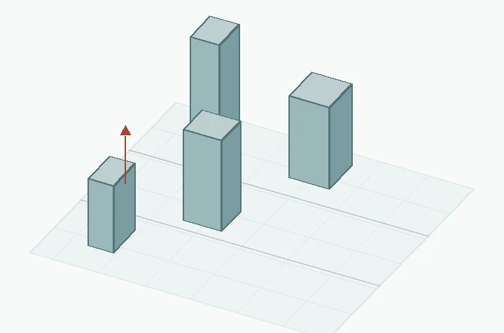
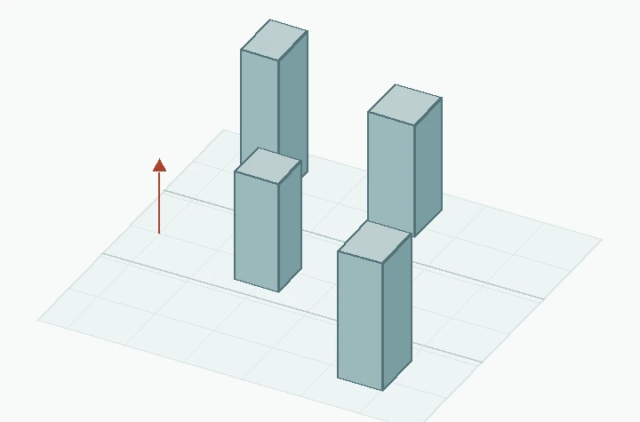
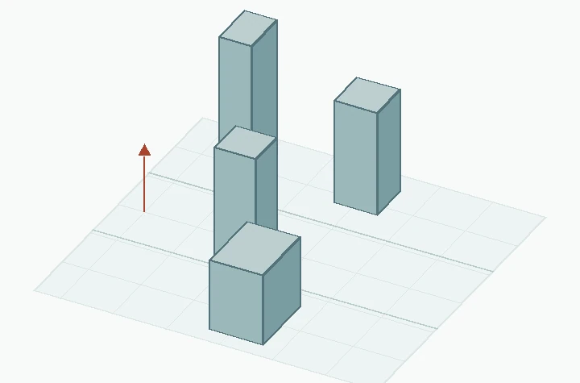
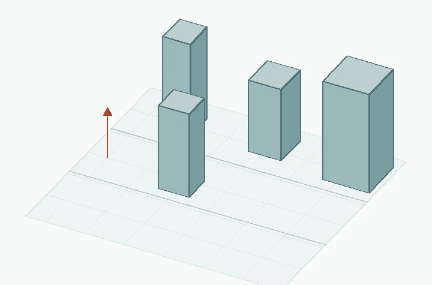
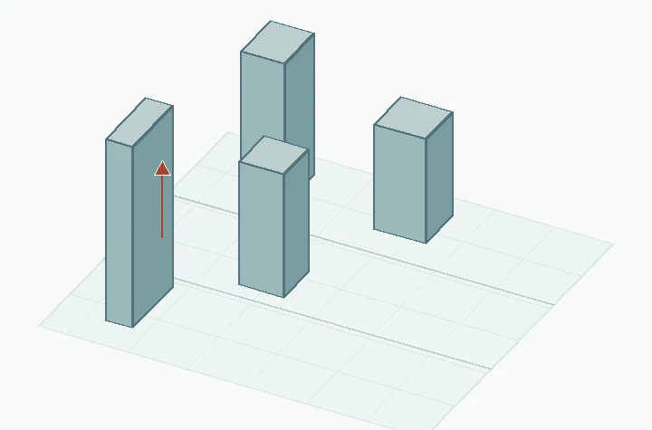
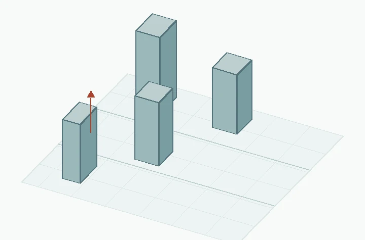
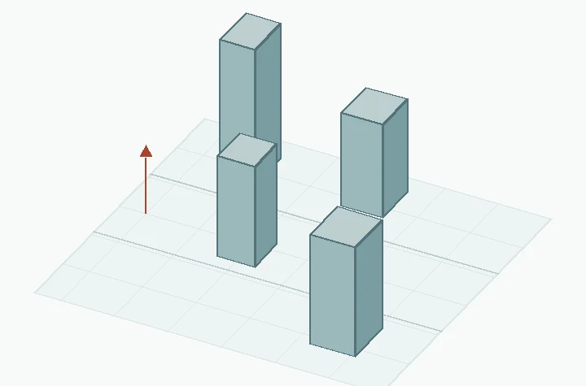
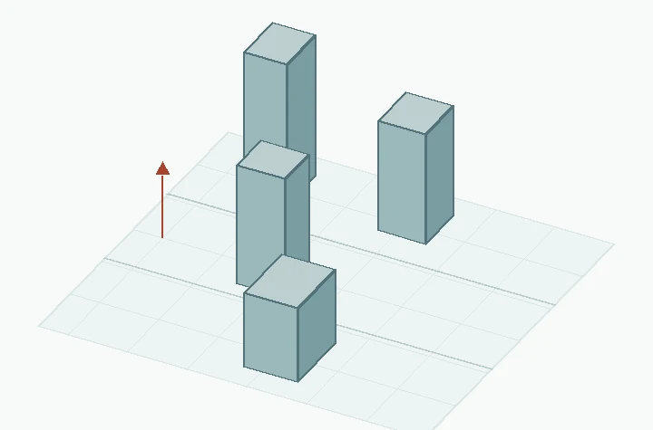
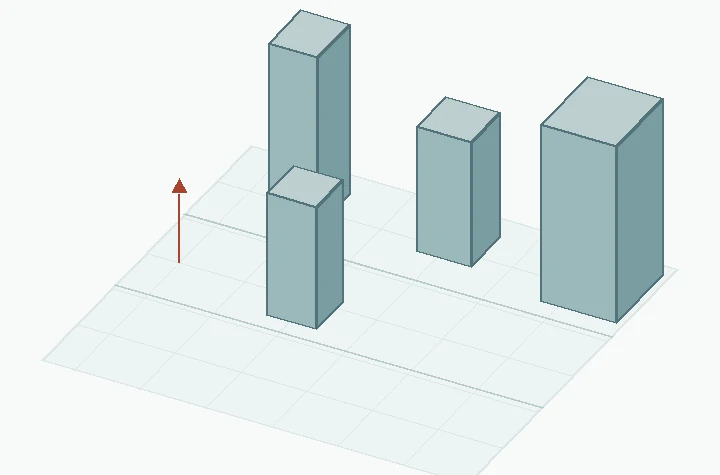
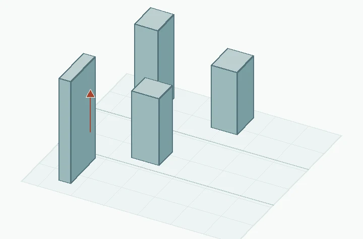
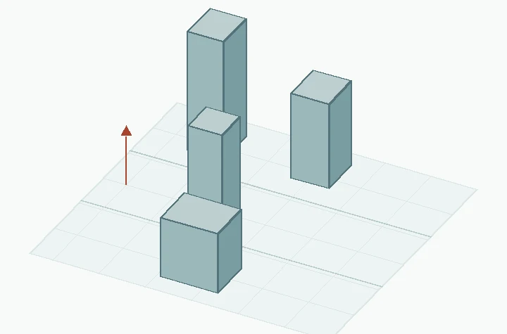
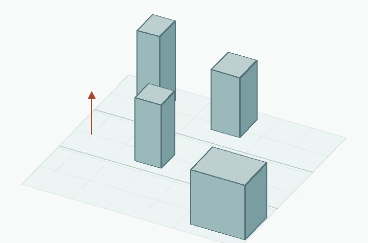
The seen test set contains 70 trajectories per speed. L05 and L06 are reserved for cross-layout generalization.
| Split | Layouts | Trajectories |
|---|---|---|
| Training | L00–L04, L07–L11 | 2,100 |
| Validation | L00–L04, L07–L11 | 450 |
| Seen-layout test | L00–L04, L07–L11 | 280 |
| Unseen-layout test | L05, L06 | 94 |
Channels are simulated at 7 GHz with Sionna RT. The wireless slot is 1 ms, and sensing updates arrive every 10 ms.
10 historical CSI slots and 12 targets at 1, 5, 10, 20, …, 100 ms.
Three 384 × 384 views from left, center, and right base-station cameras, rendered with Mitsuba.
Co-located 64 × 768 ray-cast scans with an 80 m maximum range.
Timestamped UE coordinates and velocity aligned with the sensing frames.
Ray-traced path labels are included in the training, validation, and seen-layout test splits.